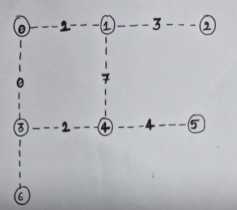
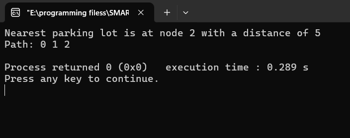

Graph Representation:
The parking area is represented as a graph where each parking lot and the entrance are nodes.
Paths connecting these nodes are represented as edges with weights corresponding to the distance.
Algorithm:
Start with the entrance node, setting its distance to zero and all other nodes' distances to infinity.
Use a priority queue to manage and process nodes based on their current shortest distance.
Extract the node with the smallest distance from the priority queue.
Update the distances of its neighboring nodes if a shorter path is found through the current node.
Repeat this process until the nearest parking lot node's shortest distance is determined.
Once the nearest parking lot is identified, trace back the path using the recorded distances and predecessor nodes.


OUTPUT:
